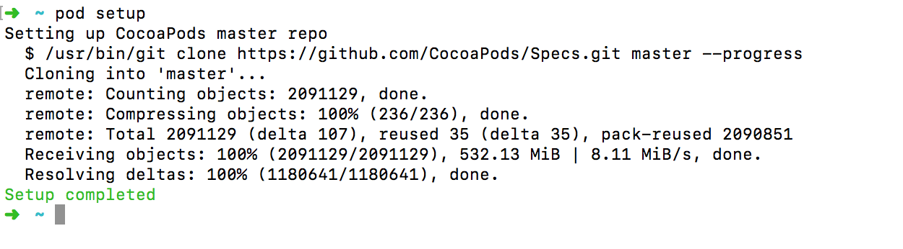
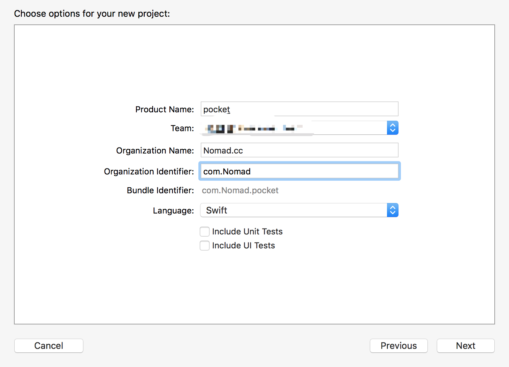
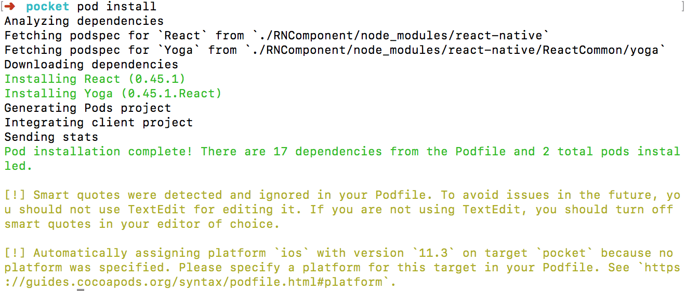
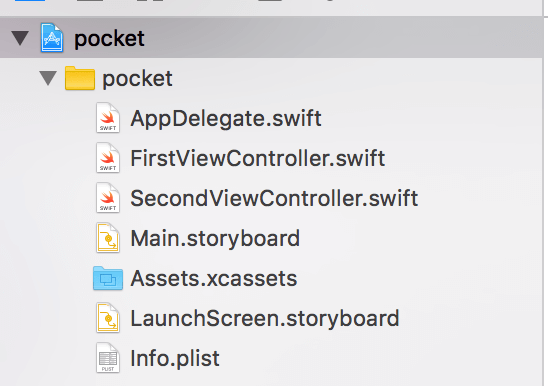
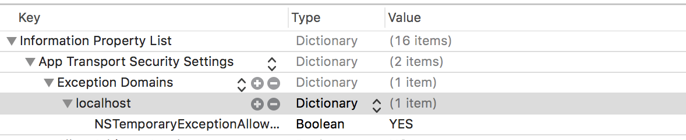
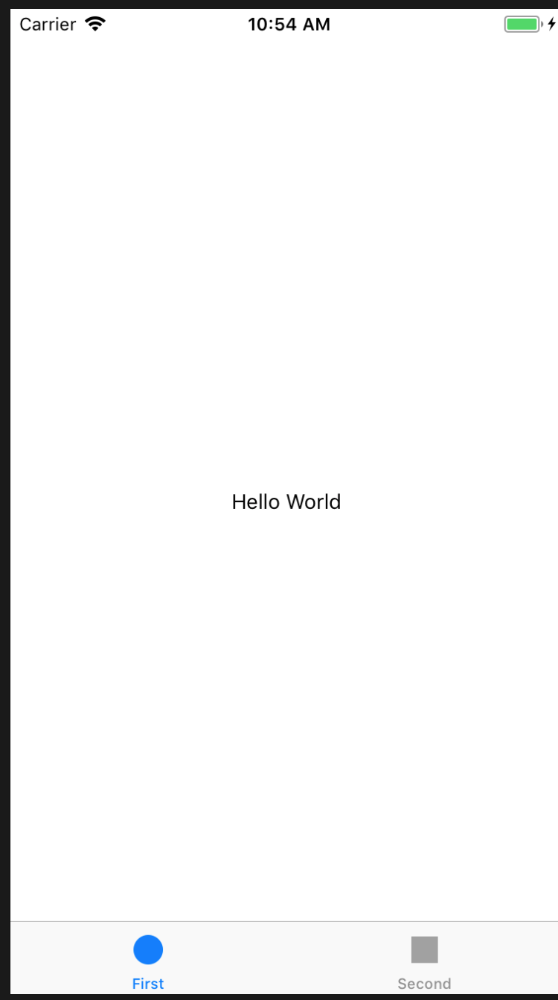
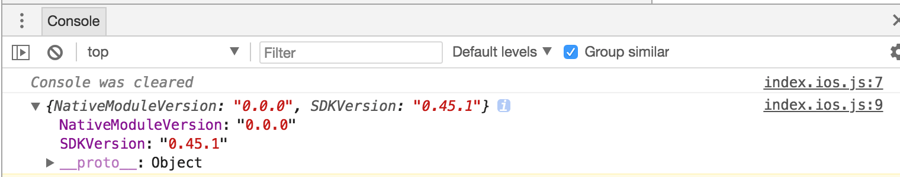

使用Swift开发React Native组件
- Native FrontEnd RN
本人只是一个前端，偶尔写一点其他语言来拓展开发技能。
因业务当中使用到 RN，所以对如何实现 RN custom module 也比较感兴趣并简单学习实现了一些功能。本文可能有些地方可能比较浅显或者有错误，还望读者海涵并指正。
环境准备
因为 swift 的断崖式升级以及 RN 不同版本，所以下面的例子可能会存在一些误差。本机环境为：
- RN：0.45.1
- swift：4.1
- Xcode：9.3
- OS：high sierra 10.13.4
CocoaPods
CocoaPods是专门为 iOS 工程提供对第三方库的依赖的管理工具，通过 CocoaPods ，我们可以更方便地管理每个第三方库的版本，而且不需要我们做太多的配置。直观、集中和自动化地管理我们项目的第三方库。
我们都有这样的经历，当我们添加第三方库的时候，需要导入一堆相关依赖库，更新的时候也要删掉重新导入然后再配置。当我们需要更新某个第三方库的时候，我们又要手动移除该库，导入新的库，然后再配置。这些是很麻烦且没有意义的工作。
安装 CocoaPods 需要用到 gem 。gem 是 RubyGems 的缩写，属于 ruby 上的包管理工具。
这里建议切换国内镜像源地址，当然你也可以加上 -p 参数来配置 proxy
gem sources --remove https://rubygems.org/ && gem sources -a https://gems.ruby-china.org/
将 RubyGems 升级到最新版本，不然有可能导致配置 CocoaPods 失败。
sudo gem update --system
可以使用下面命令来查看替换镜像位置是否成功：
gem sources -l
结果应该是：
*** CURRENT SOURCES ***
https://gems.ruby-china.org/
接下来就可以放心的安装 CocoaPods了：
sudo gem install cocoapods
然后继续进行 setUp：
pod setup
这一步是将Github上的开源库都托管都安装Podspec索引安装到到本地，这一步会很慢，建议添加本地 proxy。
我使用 ShadowsocksR 代理，默认代理端口为1080，配置好代理之后去终端输入git配置命令。
如果你同事电脑上有安装好,你其实可以从你同事电脑上拷贝过来。也可以直接访问 https://github.com/CocoaPods/Specs 这个源地址直接 download 下来。
如何恢复 git config proxy 可以采用
git config --global --unset http.proxy
# gloabl proxy
git config --global http.proxy socks5://127.0.0.1:1080
# only github proxy
git config --global http.https://github.com.proxy socks5://127.0.0.1:1080
下载安装完毕后会是如下图：

然后检测版本：pod --version，我这里显示是 1.5.0，至此 CocoaPods 安装完毕。
接下来 pod install 的时候也会遇到速度较慢的问题，可以切换为国内镜像，我这里直接添加 proxy了。
创建项目
在下面的例子当中我们会创建一个简单的 demo 来实现 custom React Native module。
创建基础模板
我们先通 xcode 来创建一个 swift 项目，姑且命令为 pocket ，为了方便测试，我们选择 Tabbed App 来作为模板，并且 language 我们当然选择 swift。并且不选择单元测试功能，这样项目目录看起来会比较简洁一点：

创建前端工作区
在项目根目录下创建一个名为 RNComponent 的文件夹来放置官方 React Native module 以及前端代码，然后创建一个 package.json 来写入依赖：
# 在当前目录下执行操作
mkdir RNComponent && cd RNComponent && touch package.json
package.json 文件内容大致如下：
当然也可以自定义 React 和 RN 版本，自然少不了需要解决版本兼容性的问题。
{
"name": "RNComponent",
"version": "0.0.0",
"private": true,
"scripts": {
"start": "node node_modules/react-native/local-cli/cli.js start --reset-cache"
},
"dependencies": {
"react": "16.0.0-alpha.12",
"react-native": "0.45.1"
}
}
接下来安装依赖：npm i -d 。
接下来的步骤大家都很熟悉了，我们需要创建一个入口文件 index.ios.js，我们用来跑测试 RN 代码，内容大致如下：
import { AppRegistry, NativeModules, View, Text, StyleSheet } from 'react-native';
import React from 'react';
class Root extends React.Component {
render() {
return (
<View style={styles.container}>
<Text> hello world </Text>
</View>
);
}
}
const styles = StyleSheet.create({
container: {
flex: 1,
backgroundColor: '#fff',
alignItems: 'center',
justifyContent: 'center',
},
});
AppRegistry.registerComponent('App', () => Root);
至此，前端目录部分工作完成。
创建 swift 工作区
进入项目根目录，初始化 Podfile，不要手动创建 Podfile：
pod init
我们在刚才生成的 Podfile 文件当中 use_frameworks! 关键词下换行添加以下依赖：
请注意下面当中的 path 是相对于我们之前的前端工作区安装的 node_modules 的地址。
# 请注意这个目录是相对目录地址。
pod 'Yoga', :path => './RNComponent/node_modules/react-native/ReactCommon/yoga'
# 请注意这个目录是相对目录地址。
pod 'React', :path => './RNComponent/node_modules/react-native’,:subspecs => [
'Core',
'ART',
'RCTActionSheet',
'RCTAdSupport',
'RCTGeolocation',
'RCTImage',
'RCTNetwork',
'RCTPushNotification',
'RCTSettings',
'RCTText',
'RCTVibration',
'RCTWebSocket',
'RCTLinkingIOS',
'jschelpers_legacy',
'BatchedBridge',
'DevSupport',
]
最后执行 pod install 执行安装依赖操作：

对于安装依赖后出现的黄色 warning，读者可以自行查阅原因并解决。（暂时不影响项目
项目当中会生成一个 pocket.xcworkspace 文件以及对应的 Podfile.lock 以及 Pods 文件夹。
注意之后打开项目是通过
pocket.xcworkspace，而不是之前的knife.xcodeproj
至此我们的 swift 工作区创建完毕。
设置 RCTRootView
我们需要设置 RCTRootView 来渲染我们的 RN，因为我们创建的是一个 Tabbed App，所以默认项目结构是这样：

简单介绍一下项目文件的用途：
XXViewController.swift根视图控制器。AppDelegate.swift继承至 UIApplicationDelegate ，整个应用的一个代理，尽量保持干净、整洁，并且带有生命周期，可以在这里对全局状态进行更新、重置。Main.storyboard主入口 storyboard，描述软件界面，用来把界面和代码分离。LaunchScreen.storyboard闪屏 storyboardInfo.plist工程配置文件
我们需要在 FirstViewController.swift 当中指定 RNViewController ，首先在头部引入 React：
import React
然后把 viewDidLoad 函数更改为以下代码：
override func viewDidLoad() {
super.viewDidLoad()
// 这个是我们 RN development 地址，ip 对应本机局域网 ip，建议不要写 localhost
let strUrl: String = "http://10.0.36.112:8081/index.ios.bundle?platform=ios&dev=true"
let jsCodeLocation = URL(string: strUrl)
let rootView = RCTRootView(bundleURL: jsCodeLocation, moduleName: "App", initialProperties: nil, launchOptions: nil)
view = rootView
}
swift 工作区额外处理
当然 ios 开发会有各种各样的问题需要去处理，我在这里列出一些当前项目可能会出现的一些问题：
ios9 以上的系统，无法通过http协议连接到localhost主机，会出现错误：Could not connect to development server
在工程当中的 Info.list 文件当中添加下面配置即可：
<key>NSAppTransportSecurity</key>
<dict>
<key>NSExceptionDomains</key>
<dict>
<key>localhost</key>
<dict>
<key>NSTemporaryExceptionAllowsInsecureHTTPLoads</key>
<true/>
</dict>
</dict>
</dict>
配置结果如下：

Xcode 一直打印：nw_connection_get_connected_socket_block_invoke 3 Connection has no connected handler
解决办法如下：
- Xcode menu -> Product -> Edit Scheme…
- Environment Variables -> Add -> Name: “OS_ACTIVITY_MODE”, Value:“disable” .
- Run your app again. done.
hello world
我们首先需要回到我们前面创建的 前端工作区 来运行 RN：
npm run start
然后在 Xcode 编译刚才的 pocket，我们这里选择模拟器来测试，成功后如下：

原生模块开发
有时候App需要访问平台API，但React Native可能还没有相应的模块封装；又或者你需要实现某些高性能、多线程的代码，譬如图片处理、数据库、或者各种高级扩展等等。所以 RN 提供了封装原生模块方法。
RN 提供了很多方法来封装原生模块，具体可以查看 RCTBridgeModule.h ,基本上大致有：
RCT_EXPORT_METHOD或者RCT_EXTERN_MODULE用来声明给 javascript 导出方法RCT_EXPORT_BLOCKING_SYNCHRONOUS_METHOD或者RCT_EXTERN_BLOCKING_SYNCHRONOUS_METHOD用来声明给 javascript 导出的同步方法RCT_EXPORT_REMAP_MODULE和RCT_EXTERN_REMAP_MODULE用来改变导出模块和方法的JavaScript 调用名称。- 等等一些其他的方法，具体请参阅源码文件。
EXPORT 和 EXTERN 的区别到底是什么？以下是个人理解，可能有偏差，望指正。
看官方介绍说后者是用来注册 swift class 或者 private object-c class。按照个人的理解：RCT_EXPORT_METHOD 这个宏是用来将原生的方法导出，只有用这个宏包裹的方法，才可以被RN调用，为了实现 RN 调用 swift 方法，所以需要用到 EXTERN 之类的方法，实际上在 EXTERN 内部也是通过 objc 关键方法 来实现混合调用。
需求分析
按照官方提供的说法，我们可以提供给 javascript 调用的方法有以下方式：
- 直接调用
- 同步调用返回结果
- callback 调用
- Promise 调用
我们希望实现一个命名为 RNDemoModule 的 Native module，然后希望能够实现上诉所有的方法，以及甚至希望能够实现 Event emitter。
准备工作
我们先创建一个命名为 RNDemoModule.swift 的文件来放置我们的模块代码，文件内容大致如下：
import Foundation
import React
@objc(RNDemoModule)
class RNDemoModule: NSObject {
// 自定义我们需要导出的方法
}
因为我们是写的 swift 文件，需要使用 @objc 来指定哪些方法或者属性在 OC当中可以调用。
以及一旦你在项目混用OC和Swift两种语言，那就需要这个 桥接文件。
一般在项目的Supporting Files文件夹里(一般系统会自动生成的，叫做“项目名-Bridging-Header.h”，项目名就是你工程的项目名）
我们这里直接创建一个命名为 RNDemoModuleBridge.m 的文件来进行桥接，大致如下：
#import <React/RCTBridgeModule.h>
@interface RCT_EXTERN_MODULE(RNDemoModule,NSObject)
// 通过RCT_EXTERN_METHOD 来导出我们的自定义方法
@end
我们可以给这个 module 添加一些导出常量：
// ... class RNDemoModule
// 导出常量
func constantsToExport() -> [AnyHashable: Any]! {
return [
"SDKVersion": "0.45.1",
"NativeModuleVersion":"0.0.0"
]
}
// ... class RNDemoModule
我们在 console 打印这个对象可以得到如下结构：

功能实现:直接调用
RNDemoModule.swift
// ... class RNDemoModule
// 简单调用
@objc func call(
_ name:String
) -> Void{
print("call with argument name:" + name)
}
// ... class RNDemoModule
RNDemoModuleBridge.m
// #import <React/RCTBridgeModule.h>
// @interface RCT_EXTERN_MODULE(RNDemoModule,NSObject)
RCT_EXTERN_METHOD(call:(NSString *)name);
// @end
index.ios.js
import { NativeModules } from 'react-native'
const { RNDemoModule } = NativeModules
RNDemoModule.call('TOM')
最终在 Xcode console 打印出 call with argument name: TOM
功能实现:同步调用返回结果
TODO:尚未完成，存在疑问
似乎返回结果需要
global.nativeCallSyncHook来做垫底？？？那怎么知道到底是哪个方法调用返回结果？
参照这篇文章 React Native技术剖析（二） 以及 RCTJSCExecutor.mm 我们知道同步调用返回结果需要设定 global.nativeCallSyncHook
// 这个 context 是当前 jsCore context
context[@"nativeCallSyncHook"] = ^id(NSUInteger module, NSUInteger method, NSArray *args) {
RCTJSCExecutor *strongSelf = weakSelf;
if (!strongSelf.valid) {
return nil;
}
RCT_PROFILE_BEGIN_EVENT(RCTProfileTagAlways, @"nativeCallSyncHook", nil);
id result = [strongSelf->_bridge callNativeModule:module method:method params:args];
RCT_PROFILE_END_EVENT(RCTProfileTagAlways, @"js_call,config");
return result;
};
RNDemoModule.swift
// ... class RNDemoModule
// 同步调用
@objc func callWithSync( _ name:String)->String{
return "hello " + name + "from sync"
}
// ... class RNDemoModule
RNDemoModuleBridge.m
// #import <React/RCTBridgeModule.h>
// @interface RCT_EXTERN_MODULE(RNDemoModule,NSObject)
RCT_EXTERN__BLOCKING_SYNCHRONOUS_METHOD(callWithSync:(NSString *)name)
// @end
index.ios.js
import { NativeModules } from 'react-native'
const { RNDemoModule } = NativeModules
// why？
global.nativeCallSyncHook = function () {
console.info(arguments) // [moduleid,method,'TOM']
}
console.info(RNDemoModule.callWithSync('TOM'))
参照 jsCore 定义，最终 chrome console 会打印出的数据格式为(Integer,Integer,Array) 最终结果也就是[70, 0,['TOM']]
功能实现:callback调用
RNDemoModule.swift
// ... class RNDemoModule
// 回调
@objc func callWithCallBack(
_ name:String,
callback:@escaping RCTResponseSenderBlock
){
// 简单实现 setTimeout 1s
DispatchQueue.main.asyncAfter(deadline: .now() + 1) {
// callback 参数 name 的值
// Node.js 风格，error frist argument。这里是 null
callback([NSNull(),[
"value":name
]])
}
}
// ... class RNDemoModule
RNDemoModuleBridge.m
// #import <React/RCTBridgeModule.h>
// @interface RCT_EXTERN_MODULE(RNDemoModule,NSObject)
RCT_EXTERN_METHOD(callWithCallBack:(NSString *)name callback:(RCTResponseSenderBlock)callback);
// @end
index.ios.js
import { NativeModules } from 'react-native'
const { RNDemoModule } = NativeModules
RNDemoModule.callWithCallBack('TOM', (err, value) => console.info(`callWithCallBack:${value}`))
最终 chrome console 会输出：callWithCallBack:TOM
功能实现:Promise调用
RNDemoModule.swift
// ... class RNDemoModule
// Promise
@objc func callWithPromise(
_ name:String,
resolve:@escaping RCTPromiseResolveBlock,
reject: @escaping RCTPromiseRejectBlock
)-> Void{
// 简单实现 setTimeout 1s
DispatchQueue.main.asyncAfter(deadline: .now() + 1) {
// 直接 resolve 参数 name 的值
resolve([name])
}
}
// ... class RNDemoModule
RNDemoModuleBridge.m
// #import <React/RCTBridgeModule.h>
// @interface RCT_EXTERN_MODULE(RNDemoModule,NSObject)
RCT_EXTERN_METHOD(callWithPromise:(nonnull NSString *)name resolve:(RCTPromiseResolveBlock)resolve reject:(RCTPromiseRejectBlock)reject);
// @end
index.ios.js
import { NativeModules } from 'react-native'
const { RNDemoModule } = NativeModules
RNDemoModule.callWithPromise('TOM').then(value => console.info(`callWithPromise:${value}`))
最终 chrome console 会输出：callWithPromise:TOM
功能实现:Event Emitter
实现 Event Emitter 目前好像有两种方案：
- Bridge.eventDispatcher().sendAppEvent
- 继承 RCTEventEmitter
官方推荐第二种方式来实现。
新的类需要继承 RCTEventEmitter，其实这个 RCTEventEmitter 也是继承 NSObject，我尝试更改老的 module 继承对象，一直报错。
我们需要新建一个 swift 文件命名为 RNDemoEventEmitter.swift，内容大致如下：
import Foundation
import React
@objc(RNDemoEventEmitter)
class RNDemoEventEmitter: RCTEventEmitter {
}
官方要求是通过实现 supportedEvents 方法来指定导出的 event name ，这里我们假设一个命名为 progress 的 event。
// ... class RNDemoEventEmitter
@objc override func supportedEvents() -> [String]?{
return ["progress"]
}
// ... class RNDemoEventEmitter
还要实现 startObserving 和 stopObserving 方法，用来优化无监听处理的事件，在实现之前我们定义一个变量来表示是否已经开始监听。
var _hasListeners:Bool = false
我们希望能够模拟被监听的事件触发的情况。所以我们需要开始监听的时候设定一个定时器，每过特定的时间去调用监听方法：也就是下面的方法 onProgress 来调用 RCTEventEmitter.sendEvent。
// ... class RNDemoEventEmitter
// var _hasListeners:Bool = false
var timer: Timer?
@objc func onProgress()->Void{
// 如果已经监听了就向 javascript 发送事件
if self._hasListeners{
// 发送特定监听名称 withName 的事件并带上自定义数据
self.sendEvent(withName: "progress", body: 1232)
}
}
@objc override func startObserving()->Void{
self._hasListeners = true
// 类似 setinterval 定时器
self.timer?.invalidate()
self.timer = Timer.scheduledTimer(
timeInterval: 1,
target: self,
selector: #selector(self.hello),
userInfo: nil,
repeats: true
)
}
@objc override func stopObserving()->Void{
// 关闭 timer
self.timer?.invalidate()
self._hasListeners = false
}
// ... class RNDemoEventEmitter
我们在前端项目主入口文件 index.ios.js 当中添加监听：
import { NativeEventEmitter, NativeModules } from 'react-native'
const emitter = new NativeEventEmitter(NativeModules.RNDemoEventEmitter)
const subscription = emitter.addListener('progress', data => console.info(data))
我们可以在 chrome console 看到每隔一段时间会输出特定数据，注意别忘记在 RN 的componentWillUnMount 周期内解除这个事件监听。